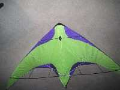
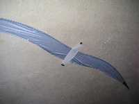
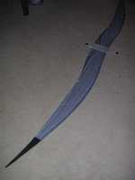
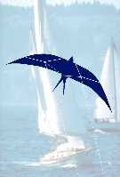
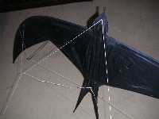

Un Delta...oiseau
[Premiers CVs]


Pour m'amuser plus classiquement, j'ai aussi créé un delta pilotable... classique, léger (carbone 4) car je volais à l'époque surtout au Bois de Boulogne, à Bagatelle où le vent est souvent masqué par les arbres. Evidemment, je n'ai pas pu m'empêcher d'y dessiner un oiseau...
La Mouette


Pour revenir aux oiseaux purs, toujours pilotables, la Mouette a été un cerf-volant assez extrême, difficile à mettre au point et à faire voler. D'autant plus que j'ai expérimenté avec elle diverses formes de brides (à palonnier, mais aussi à anneau coulissant, inversées, etc. qui n'ont pas toujours été de francs succès...).


Avec l'expérience que j'ai acquise, je devrais maintenant la reprendre et je saurais sans aucun doute la faire marcher mieux, il est dommage en effet de la laisser au placard faute d'une solution parfaite. Car elle avait un vol et des évolutions très douces et très dansantes (plutôt slow) que j'aimerais revoir.
Le Martinet



Après la mouette au vol lent, j'ai voulu avoir plus rapide et me suis tourné vers le Martinet. L'armature transversale est constituée d'un tube central en carbone de 5,5, les bouts d'aile étant des joncs de 3 enfilés dans le tube (voir plan pour les détails). Pour lui, j'ai repris un mode de pilotage semblable à celui du delta. Il est un peu moins efficace qu'un vrai delta à cause de la souplesse de l'arc qui constitue l'armature principale, mais on peut quand même passer des axels avec.
Détail de Structure


Malgré son envergure, il a peu de surface, vue sa forme échancrée, et nécessite un peu de vent. Il prend les rafales et les tractions brusques en accélérant et en repliant les ailes vers l'arrière, ce qui est amusant mais le rend inapte à la précision ! Il vaut mieux faire des cercles avec que des carrés... Il est quand même joueur et a été construit en petite série par "les Cavaliers du Ciel" (bonjour Mona, message personnel) sous le nom de "Hirondelle". Si vous en avez acheté un et que vous ayez des difficultés (en particulier fragilité des emboîtements), contactez-moi et je vous dirai quoi faire.
Vous pouvez pour plus d'infos et les plans lire l'article paru au Lucane "Hirondelle ? non, Martinet"